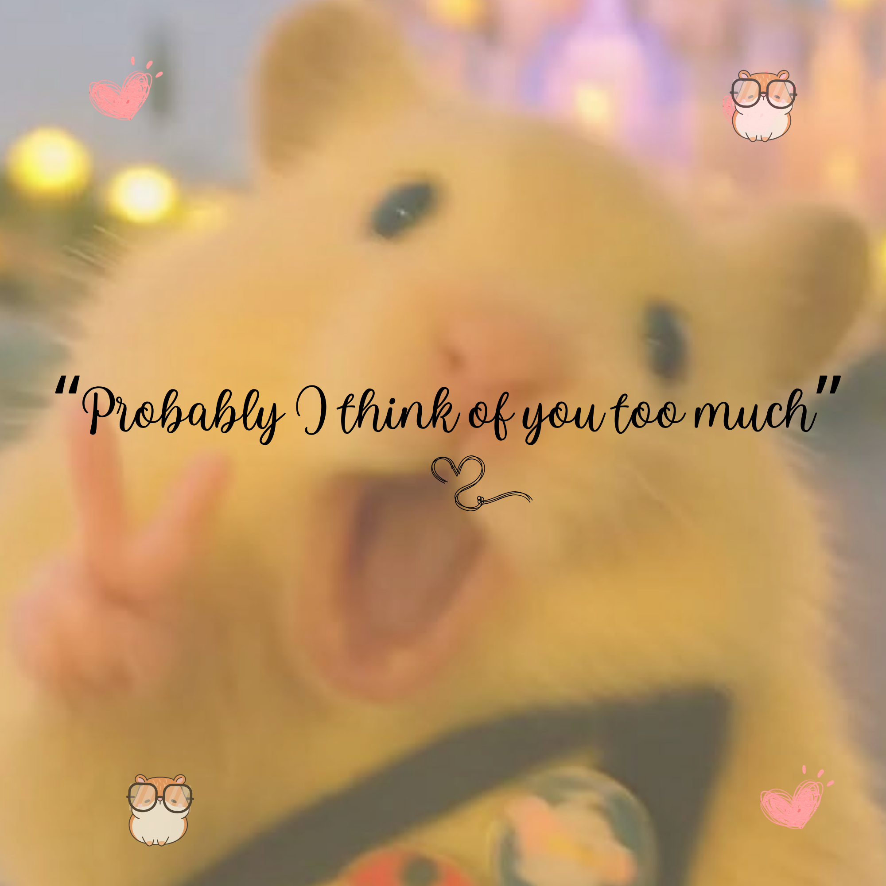
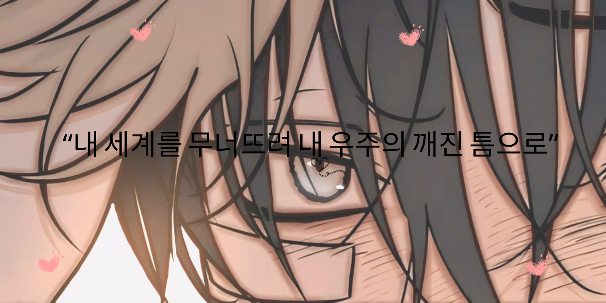
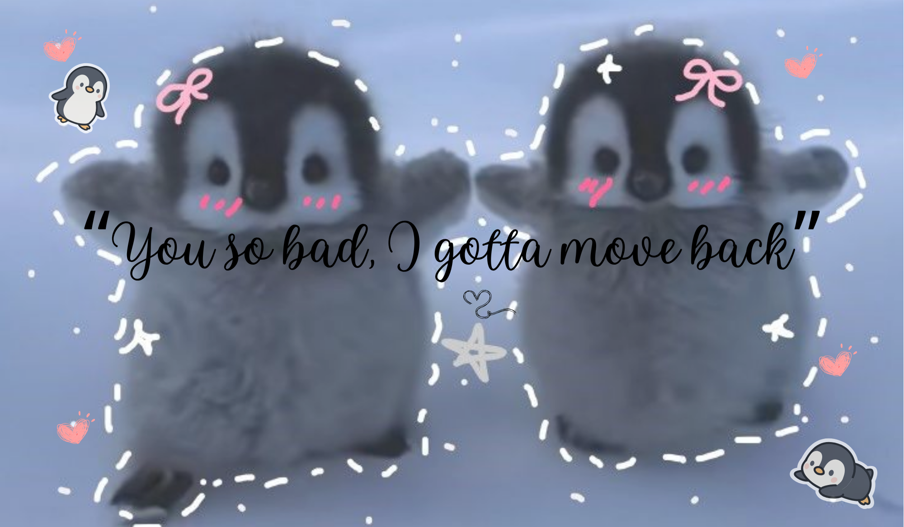

Se que esta me la dedicaste pero no puedo evitar acordarme de ti, me encanta el ritmo, el significado y toooodo. Sin duda alguna de mis favoritas. Empecé a escuchar varias de Kanegi, espero que tu no jaja porque quiero dedicar alguna. ૮ ྀིᴗ͈ . ᴗ͈ ྀིა
No hace mucho que la escuché, me mega ultra encantoooooó!!!! No tiene traduccion en ningún lado tendras que buscarla. Un detalle más, cambia el género jejejej. (⸝⸝⸝>﹏<⸝⸝⸝)

A caso no es obvio? Tal vez no es novedad esta canción pero sin duda me encanta porque así se siente. Como dice una parte de la canción, "no estoy familiarizada con este sentimiento pero no lo odio.... es incomodo y dulce por primera vez". Es muy interesante y me alegro que haya sido contigo. ꉂ(˵˃ ᗜ ˂˵)

Jajajaj perdón si no son canciones tan diferentes a las que te dije cuando nos conocimos pero es dificil que cambie mis preferencias. Volviendo a la canción mega siiii. Llevamos un mes sin vernos a tal punto que ya no quede tanto pero cuando nos veiamos mucho decía esa soy jujuju. (ᗒᗣᗕ)՞ Me gusta el ritmo, el significado tooodo. Espero que nos veamos pronto para volver a tener ese mismo sentimiento de cercanía. (˶˃ ᵕ ˂˶)
Es muy corta la canción pero la he escuchado ultimamente porque no nos hemos visto jujuju. Literal yo todo el tiempo, yo sé que no se puede pero en serio desearía. Ya no hemos hecho llamada pero ya no insistiré jeje. Aún así, haré lo posible por esperarte. ｡･(ू˃̣̣̣̣̣̣ ꞈ˂̣̣̣̣̣̣ ू)
Jajaja volví despues de meses, afortunamente seguimos juntos jejej.
Otra canción (que posiblemente ya escuchaste por mí jajaj) es esta. Decidí esta canción porque me tranmite la emoción descontrolada al amar a alguien y no querer separarte de esa persona por nada. Cuando te das cuenta que esa persona te robó el corazón y... Jajaja ya me senti cursi. La canción hablará por sí misma ✩•̩̩͙*˚ｄ(≧𓎟≦)ｂ˚*•̩̩͙✩
Creo que debí poner todas con video jajaj. Te encargo las que no jejej
Como dice la canción, "por favor no cambies porque te amo". Como dices, nuestra relación ha evolucionado pero aún conservamos nuestro toque especial ojala así siga siendo plis plis. Te lo comenté en el pasado, antes me daba miedo realmente ser novia de alguien porque pensaba que el coqueteo o el interés solo se vería antes de dar el sí, ya pasando empezaba una rutina y el amor empezaría a bajar exponencialmente. Ahora veo que no es asi, así que te pediré que sigamos teniendo esta cercanía y superación de conflictos jejej (๑´• .̫ •ू`๑)💓
Sabes cual es no? pues si esta fue una canción muy importante para mí al inicio de todo, porque era como si me estuvieras entregando todo tu corazón y solo pedías que lo cuidara y no lo rompiera, que te amara de la misma manera; pero esto es graciosamente tierno porque...yo tenía miedo de que salir lastimada, cuando escuché esta canción sentí como esa inseguridad desaparecía poco a poco y decidí entregarte mis profunso sentimientos. Igualmente me recuerda a mi primer semestre, desde vestirme para verte hasta ese frío de nerviosismo por no saber como actuar o que decir cuando estaba a solas contigo.
Pensaba poner más canciones pero, jajaj ya hoy es nuestro aniversariooooo, felices 365 días (que ya debieron pasar cuando leas esto). Decidí poner esta canción porque creo que no te la había dedicado como tal y me gusta mucho así que gozala bebé. Espero que mi llegada haya cambiado tu mundo porque eso mismo hizo la tuya en el mío. ₍₍⚞(˶˃ ꒳ ˂˶)⚟⁾⁾
En la playlist pondremos más si? Te amoooooooooooo, no lo olvides. Ya solo preparo esto en link y te lo mando bebé.
Atentamente: Adriana R.A (˶˃ ᴗ ˂˶)